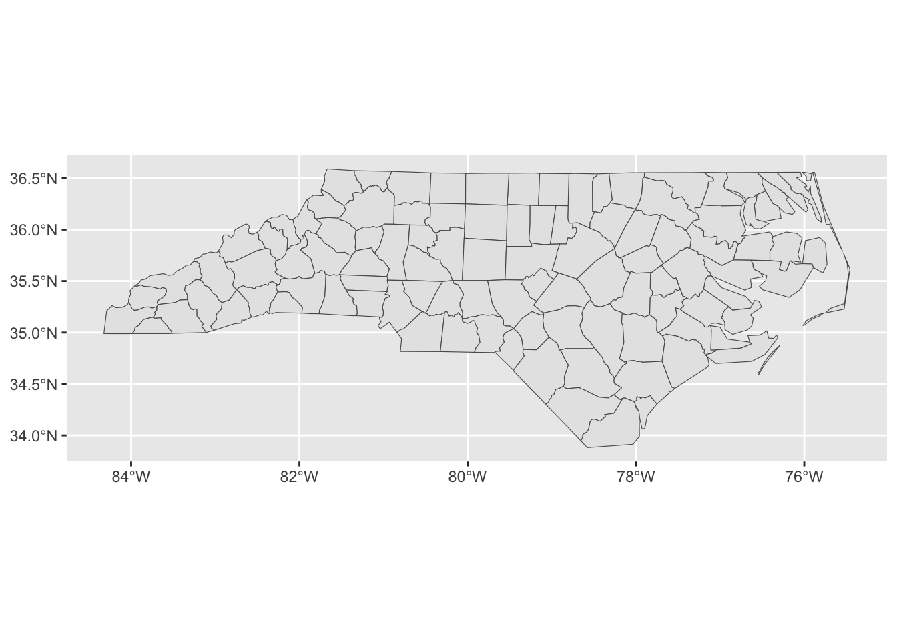
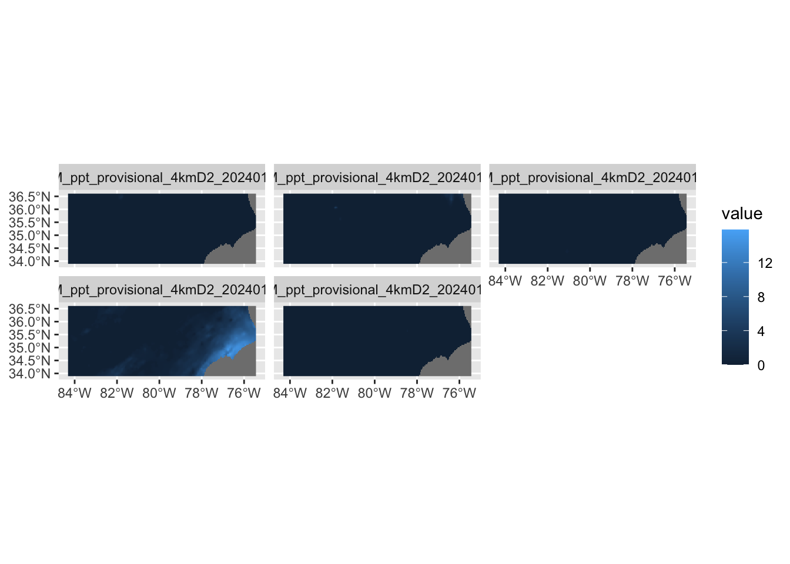

Reading layer `nc_practice' from data source
`/Users/tmieno2/Dropbox/TeachingUNL/R-spatial-micro-credit/Lectures/Data/nc_practice.shp'
using driver `ESRI Shapefile'
Simple feature collection with 100 features and 3 fields
Geometry type: MULTIPOLYGON
Dimension: XY
Bounding box: xmin: -84.32385 ymin: 33.88199 xmax: -75.45698 ymax: 36.58965
Geodetic CRS: NAD27Final Assignment
Instruction
We are going to use data files found here. Note that you have downloaded these data files already during the class. So, if you know where they are, you do not need to download them again of course. Otherwise, please download them again (You need only some of them, but it is just easier to download them all.).
Knowing what packages to use is also part of the assignment. Load them using
library()as you find them necessary.
Problem 1
Reading a shape file
Read nc_practice.shp file and assign it to an R object named nc_counties.
Here is what a successfully imported file looks like:
Map creation using an sf object
Create a simple map using ggplot().
Here is what it should look like:

Problem 2
Read raster data files
Read PRISM precipitation data from January 1 through January 5 in 2024 as a single SpatRaster object named ppt_5. The files are found inside the PRISM folder.
Here is what the SpatRaster object look like:
class : SpatRaster
dimensions : 621, 1405, 5 (nrow, ncol, nlyr)
resolution : 0.04166667, 0.04166667 (x, y)
extent : -125.0208, -66.47917, 24.0625, 49.9375 (xmin, xmax, ymin, ymax)
coord. ref. : lon/lat NAD83
sources : PRISM_ppt_provisional_4kmD2_20240101_bil.bil
PRISM_ppt_provisional_4kmD2_20240102_bil.bil
PRISM_ppt_provisional_4kmD2_20240103_bil.bil
... and 2 more source(s)
names : PRISM_~01_bil, PRISM_~02_bil, PRISM_~03_bil, PRISM_~04_bil, PRISM_~05_bil
min values : 0.000, 0.0000, 0.0000, 0.0000, 0.0000
max values : 42.917, 10.2093, 87.7497, 37.0813, 90.0984 Cropping
Crop ppt_5 to the bounding box of nc_counties and save the resulting object as ppt_5_cropped.
class : SpatRaster
dimensions : 65, 213, 5 (nrow, ncol, nlyr)
resolution : 0.04166667, 0.04166667 (x, y)
extent : -84.3125, -75.4375, 33.89583, 36.60417 (xmin, xmax, ymin, ymax)
coord. ref. : lon/lat NAD83
source(s) : memory
names : PRISM_~01_bil, PRISM_~02_bil, PRISM_~03_bil, PRISM_~04_bil, PRISM_~05_bil
min values : 0.0000, 0.0000, 0.0000, 0.0000, 0.0000
max values : 1.7195, 4.5058, 0.4707, 15.8547, 0.5189 Map making using raster data
Create a map of precipitation in North Carolina faceted by day (Hint: use the tidyterra package)

Problem 3
Raster value extraction
Using ppt_5, extract precipitation values for each of the counties in nc_counties. Name the resulting object ppt_5_extracted.
Here is the first 6 rows of the successfully extracted values:
Warning: [extract] transforming vector data to the CRS of the raster ID PRISM_ppt_provisional_4kmD2_20240101_bil
1 1 0.0000
2 1 0.0000
3 1 0.0000
4 1 0.0095
5 1 0.0000
6 1 0.0000
PRISM_ppt_provisional_4kmD2_20240102_bil
1 0
2 0
3 0
4 0
5 0
6 0
PRISM_ppt_provisional_4kmD2_20240103_bil
1 0
2 0
3 0
4 0
5 0
6 0
PRISM_ppt_provisional_4kmD2_20240104_bil
1 0.6990
2 0.7103
3 1.0457
4 0.6740
5 0.6578
6 0.7521
PRISM_ppt_provisional_4kmD2_20240105_bil
1 0
2 0
3 0
4 0
5 0
6 0Summarize
First run the following code to simplify the subsequent operations, which will make the variable names shorter.
names(ppt_5_extracted) <- c("id", "ppt_01", "ppt_02", "ppt_03", "ppt_04", "ppt_05")
head(ppt_5_extracted) id ppt_01 ppt_02 ppt_03 ppt_04 ppt_05
1 1 0.0000 0 0 0.6990 0
2 1 0.0000 0 0 0.7103 0
3 1 0.0000 0 0 1.0457 0
4 1 0.0095 0 0 0.6740 0
5 1 0.0000 0 0 0.6578 0
6 1 0.0000 0 0 0.7521 0Now, calculate the mean of of the precipitation values for each of the counties each day and name it ppt_5_mean. [Hint: use dplyr::group_by() and summarize()]
Here is what the summarized numbers look like:
# A tibble: 100 × 6
id ppt_01 ppt_02 ppt_03 ppt_04 ppt_05
<dbl> <dbl> <dbl> <dbl> <dbl> <dbl>
1 1 0.00218 0 0 0.174 0
2 2 0 0 0 0 0
3 3 0 0 0 0 0
4 4 0 0.542 0 4.25 0
5 5 0 0 0 0.322 0
6 6 0 0.0190 0 1.76 0
7 7 0 1.08 0 4.61 0
8 8 0 0.489 0 3.51 0
9 9 0 0 0 0.128 0
10 10 0 0 0 0 0
# ℹ 90 more rowsSummarize
Find the name of the county that had the most precipitation on January 4th, 2024. [Hint: Remember id value corresponds to the row number of nc_counties. For example, id = 1 corresponds to the first row of nc_counties.]
Here is the county:
Simple feature collection with 1 feature and 3 fields
Geometry type: MULTIPOLYGON
Dimension: XY
Bounding box: xmin: -77.16426 ymin: 34.58783 xmax: -76.2877 ymax: 35.01666
Geodetic CRS: NAD27
AREA NAME FIPS geometry
95 0.125 Carteret 37031 MULTIPOLYGON (((-77.14896 3...